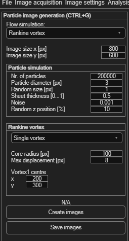

Synthetic particle image generation
Generates a pair of synthetic particle images from a known velocity field — useful for testing PIV settings against a known "correct answer", or for learning how PIV parameters affect results without needing real data.
Open via Synthetic particle image generation → Settings (Ctrl+G).

Image and particle settings
| Field | Meaning |
|---|---|
| Image size x / y [px] | Output image dimensions (default 800×600). |
| Nr. of particles | Particle count in the simulation (default 200,000). |
| Particle diameter [px] | Mean particle image size (default 3). |
| Random size [px] | Variation added to particle diameter (default 1). |
| Sheet thickness [0…1] | Simulated laser sheet thickness — thinner sheets make particles brighter (default 0.5). |
| Noise | Simulated sensor noise (default 0.001). |
| Random z position [%] | Out-of-plane particle motion, perpendicular to the sheet (default 10). |
Choosing a flow field
The Flow simulation dropdown selects the ground-truth velocity field; each has its own parameters:
| Type | Parameters |
|---|---|
| Rankine vortex | Single vortex or vortex pair; core radius (solid-body rotation core, default 100 px); max displacement (default 8 px); x/y centre for each vortex. |
| Hamel-Oseen vortex | Single vortex or vortex pair; max displacement (default 5 px); a time [0…1] parameter — the vortex decays in vorticity as time increases; x/y centre for each vortex. |
| Linear shift | Max displacement (default 5 px) — uniform translation. |
| Rotation | Max displacement (default 5 px) — uniform rotation. |
| Membrane | Uses the general particle settings above with no type-specific parameters. |
Generating and using the images
- Configure your settings, then click Create images to generate the synthetic image pair.
- Click Save images to write them to disk.
- Load them into a new PIVlab session like any other images, run your analysis, and compare the result against the known flow field you configured.